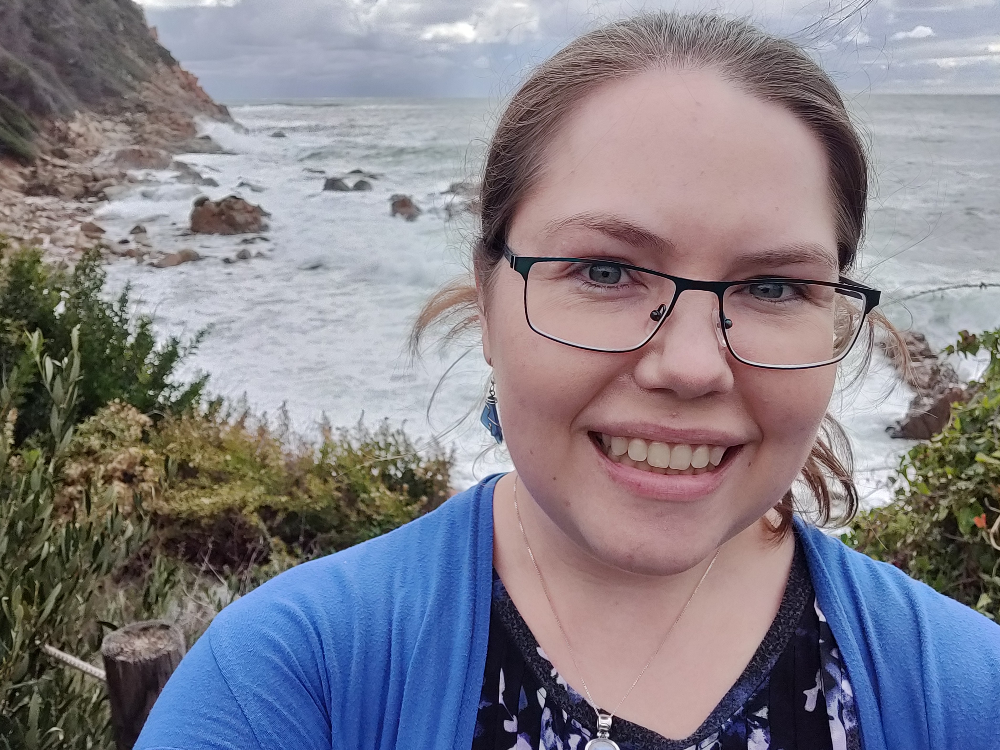

Welcome to my homepage!
I am a postdoctoral scholar in the FOGGIE group at Space Telescope Science Insitute. I obtained my PhD in Astronomy from The Ohio State University Department of Astronomy in July 2019 and my Bachelor of Science degree in Physics from California Institute of Technology in 2013. My research interests include the circumgalactic medium (CGM), galaxy formation and evolution, galactic winds, and how stellar feedback impacts star formation. I have experience in exploring the physics of the CGM using analytic theory, simulations, and observations. I am currently focused on connecting these three approaches to produce a complete model of CGM gas dynamics and overall structure.
My work focuses on using high-resolution simulations of the gas in the CGM to develop new models that describe the kinematics, temperature, and energy balance of the halo gas and how this gas affects galaxy evolution and how we interpret observations.
My ongoing projects include an analysis of filamentary accretion in the FOGGIE simulations. See my research page for more.